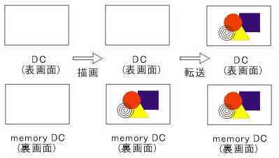
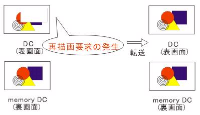

前回、デバイスコンテキスト(DC)とメモリデバイスコンテキスト(以下メモリDC)について詳しく(？)解説しました。今回は、メモリDCを使う必要性を再描画処理から述べ、実際にメモリデバイスコンテキストを作成し管理する方法を解説します。
| 6.再描画の重要性 |
「再描画」と簡単に言ってしまいますが、実はかなり大変な作業のことなのです。みなさんはWindowsに付属の"Paint"を使用してお絵かきをした経験があると思います。この"Paint"では、書いた絵の上に何らかのウィンドウが重なったりウィンドウのサイズが変更されても、書いた絵はきちんと表示されていますよね。こんなの当たり前でしょうと思った方…それは違うんです。これは"Paint"というソフトが積極的に再描画しているためです。
前回、最後に3本の線を描くプログラムを書いていただきましたが、あのソフトウェアの上に、何か別のウィンドウを重ねたりウィンドウのサイズを変更しても3本の線はきちんと表示されているはずです。あれはソフトウェアの方で積極的に再描画をかけているからです。といっても私たちはそんなコーディングをしたわけではありませんでした。それは、再描画の必要性が生じたとき、フレームワーク(AppWizardで作られたソフトウェアの基本構造)がViewクラスのOnDraw関数を呼ぶことになっているため、自動的に再描画処理がされていたという結果の賜物です。
しかし、全ての描画コードをOnDrawで書くとは限りませんし、描画コードをOnDrawのみで書くことは非常にナンセンスです。したがって、自分で描いたものは自分の責任で再描画を行う必要性が生じます。
先ほど、再描画は大変な作業であると言いました。例えば、円を1つ描いたとします。この時点で、このプログラムに対して円を再描画する責任が生じたことになります。今度は四角を書いたとします。この時点で、このプログラムに対して円と四角を再描画する責任が生じました。・・・なんてことを繰り返していきますと、再描画すべきものがどんどん増えてしまいます。DCの描画関数の実行速度は比較的遅いために、再描画すべき図形が増えてしまうと、とんでもないことになってしまうことが目にみえてくるでしょう。
さらに恐ろしいことは、再描画すべき順序を覚えていなくてはならないということです。ではこれらの問題を解決する方法はあるのでしょうか？
その一つがメモリデバイスコンテキストなのです。
| 7.メモリDCと再描画 |
メモリDCは「裏画面」と呼ばれるとイントロダクションでも述べました。これに対してユーザが見ているディスプレイ画面を「表画面」と呼ばれることがあります。この表画面とは「通常のデバイスコンテキスト」に相当するものです。
ディスプレイで表示される色などの情報は、フレームバッファと呼ばれるメモリに書き込まれます。フレームバッファとは、簡単に言えばディスプレイの1つ１つのピクセルが出すべき色情報をもっているバッファのことです。ウィンドウが移動するとき、フレームバッファの内容が変わることで、私たちにはウィンドウが動いたように見えるのです。このフレームバッファと表画面は密接に関わりあっているため、他のウィンドウの移動やウィンドウのサイズ変更による影響を受けてしまいます。ところがメモリDCは、通常のメモリ領域に過ぎないので、影響を全く受けないという性質があります。
描画処理の基本は、2段階に分けられます。
1. 描画処理をメモリDC(裏画面)に対して行う。
2. メモリDCの情報を表画面へ転送する。
そして再描画の処理とは、
再描画の要求があった時、メモリDCの情報を表画面に転送する。
これらの処理を図にすると以下のようになるでしょう。
| Fig3_1.jpg 描画処理 |
|  |
| Fig3_2.jpg 再描画処理 |
|  |
| 8.メモリDCを作成する。 |
長ーい解説でしたが、DCとメモリDCは絶対知っておきたい内容なのでかなり詳しく解説しました。さてメモリDCを作成してみましょう。作成したといっても何も起きません(ただのメモリ領域を確保するだけですからね)
1.メモリデバイスコンテキストを定義する
以下の表のように変数を追加する。
| 変数の追加(BmpLoaderView.hファイル内) |
| // インプリメンテーション public: // 以下を追加 |
メモリDCの定義以外に、ビットマップオブジェクトへのポインタ変数を2つ定義しています。デバイスコンテキストはビットマップオブジェクトを必ず1つ持たなくてはいけないと前章でもいいましたが、デバイスコンテキストによる描画情報は単なるビットマップに過ぎません。あとでビットマップオブジェクトの領域を動的に確保する予定なので、ここではそのポインタpBitmapを定義しておきます。pOldBitmapは、メモリDCがビットマップオブジェクト(pBitmap)持つとき、それまで持っていたビットマップオブジェクトをストックしておかなくてはならないので、そのストック用として定義しておきます。
2.CBmpLoaderView::OnInitialUpdateをオーバーライドする
ClassWizardを起動し、メッセージタブ内において、以下のように選択しOKを押します。
クラス名 CBmpLoaderView
オブジェクトID CBmpLoaderView
メッセージ OnInitialUpdate
オーバーライドとは、クラスの継承において基底クラス内のメンバ関数(メソッド)と同名・同引数のメンバ関数を派生クラス内で作ることを言います。オーバーライドせずにOnInitialUpdateを呼ぶと、基本クラスのCView::OnInitialUpdateが呼ばれますが、オーバーライド後はCBmpLoaderView::OnInitialUpdateの方が呼ばれるようになります。詳しくはプログラミング辞典を参考にしてください。
3.OnInitialUpdate()内にコーディングをする
| OnInitialUpdate内のコーディング(BmpLoaderView.cpp内) |
| void
CBmpLoaderView::OnInitialUpdate() { CDC *pDC;//通常のデバイスコンテキストを格納するポインタ} |
解説
pBitmap = new CBitmap();
ビットマップオブジェクトを動的に作成します。pBitmapはビットマップオブジェクトのポインタですが、ポインタは単にアドレスが入るだけですから、オブジェクト自体は定義されていません。そこでオブジェクトを動的に作成する必要があります。
GetClientRect(&cClient);
ウィンドウ内の白い画面領域のサイズを取得します。
pDC=GetDC();
現在のウィンドウに関連付けされているデバイスコンテキスト(表画面)へのポインタを取得します。メモリDCとビットマップの領域を確保するために必要になります。
dcMem.CreateCompatibleDC(pDC);
表画面と裏画面の関連付けを行います。これは先ほど説明した「転送」からも分かるように、デバイスコンテキストとメモリDCが似たような構造をとっていないと「転送」することが出来ないからです。さきほどメモリDCをメンバ変数として定義しましたが、ウィンドウが破棄されるまで再描画の度にメモリDCからデータを転送する必要があるからため(関数内にローカルで定義した場合、関数を抜けてしまうと無効になってしまう）、メモリDCの変数をメンバとして保持したのです。
pBitmap->CreateCompatibleBitmap(pDC,cClient.Width(),cClient.Height());
メモリDCの描画情報はビットマップで保持するといいましたが、そのビットマップのデータ領域を作成します。このとき、先ほど取得した現在のDC(表画面）と互換性のあるビットマップを作成する必要があります。これで表画面と非常に似た構造のビットマップができあがります。
pOldBitmap = dcMem.SelectObject(pBitmap);
作成したビットマップをメモリDCに持たせます。このとき初めに持っていたメモリDCのビットマップをストックしておく必要があるので、pOldBitmapに保持しておきます。
cBrush.CreateSolidBrush(RGB(255,255,255));
白い塗りつぶしブラシを作成します。
pOldBrush=dcMem.SelectObject(&cBrush);
メモリDCに白いブラシを持たせます。このとき、先ほどまで持っていたブラシをストックしておきます。
dcMem.PatBlt(0,0,cClient.Width(),cClient.Height(),PATCOPY);
現在持っているブラシを使用し、現在メモリDCが選択しているビットマップに色やパターンをつけます。今選択しているブラシは白い塗りつぶしブラシなので、白くぬりつぶされたビットマップとなります。これらは初期画面でクライアント領域を白くしておくためです。
dcMem.SelectObject(pOldBrush);
ブラシが不要になったので、先ほどまでストックしておいたブラシを元に戻しておきます。
ReleaseDC(pDC);
現在のデバイスコンテキストへのポインタを解放します。取得したら解放・・・これは基本ですね。
4.CBmpLoaderView::OnDestroyをオーバーライドする
ClassWizardを起動し、メッセージタブ内において、以下のように選択しOKを押します。この作業を行うと、OnDestroy関数が追加されます。
クラス名 CBmpLoaderView
オブジェクトID CBmpLoaderView
メッセージ WM_DESTROY
OnDestroyは、ウィンドウを閉じた時に送られるWM_DESTROYメッセージによって実行される関数で、ウィンドウの破棄を行う関数です。
5.OnDestroy()にコーディングする
| OnDestroy内のコーディング(BmpLoaderView.cpp内) |
| void
CBmpLoaderView::OnDestroy() { } |
解説
dcMem.SelectObject(pOldBitmap);
メモリDCは、OnInitialUpdate関数で新しいビットマップを持っているので、ストックしておいたビットマップ(メモリDCが初めに持っていたもの)を再び割り当てます。
pBitmap->DeleteObject();
ビットマップオブジェクトを削除します。必ずメモリDCからビットマップの選択を外したあと(つまりSelectObjectを実行した後)に実行しなくてはなりません。
dcMem.DeleteDC();
メモリDCを削除します。これで通常のデバイスコンテキストとの互換性も失われます。ただし変数自体は削除されません。メモリDCの変数は、CBmpLoaderViewがなくなるときにデストラクタが起動し完全に削除されるからです。
CView::OnDestroy();
これは、オーバーライドした時に既に書かれているはずですが残しておいたほうがいいと思います。
6.転送コードを記述する
最後に転送コードを記述します。転送を行うタイミングは、画面の更新と再描画の要求があったときです。どちらにしろ、再描画も更新時もCView::OnPaint関数が呼ばれることになっており、OnPaint関数がOnDraw関数を呼ぶことになっています。したがって、転送コードはOnDraw関数に記述すればよいことになりますね。したがってOnDraw関数に転送コードを記述します。
| OnDraw内のコーディング(BmpLoaderView.cpp内) |
| void
CBmpLoaderView::OnDraw(CDC* pDC) { CBmpLoaderDoc* pDoc = GetDocument();} |
解説
nResult = pDC->GetClipBox(&cClip);
クリッピングとは、描画を行う場合に特定の範囲を描画させないことをいいます。つまりウィンドウの一部をだけ再描画すれば全体の画像が再構築できる場合に、すべての情報を描画すると時間の無駄であるので、再描画するべき四角形領域を取得します。このときクリッピング作業による判定情報がreturnされるので捕まえておきます。
if(nResult == ERROR || nResult == NULLREGION){return;}
捕まえたクリッピング判定情報が、Errorの時またはNULLREGIONの時のみreturnします(再描画処理を行いません)。
Error デバイス コンテキストが正しくありません。
NULLREGION クリッピング領域が空です。
pDC->BitBlt(cClip.left,cClip.top,cClip.Width(),cClip.Height(),&dcMem,cClip.left,cClip.top,SRCCOPY);
ビットマップを転送元のメモリDCから現在のデバイス コンテキストにコピーします。このとき、
cClip.left 転送先四角形の左上隅の論理 x 座標を指定します。
cClip.top 転送先四角形の左上隅の論理 y 座標を指定します。
cClip.Width() 転送先四角形と転送元ビットマップの幅を (論理単位) で指定します。
cClip.Height() 転送先四角形と転送元ビットマップの高さを (論理単位) で指定します。
&dcMem ビットマップをコピーするデバイス コンテキストを識別する CDC オブジェクトへのポインタを指定します。
cClip.left 転送元ビットマップの左上隅の論理 x 座標を指定します。
cClip.top 転送元ビットマップの左上隅の論理 y 座標を指定します。
SRCCOPY 転送元ビットマップを転送先ビットマップにコピーするフラグです。
です。
ここまで記述したら実行してみてください。何も起こらなければそれでOKです。まだビットマップを読み込むコードを記述していませんものね。次章ではビットマップ読み込みコードを書いていきます。